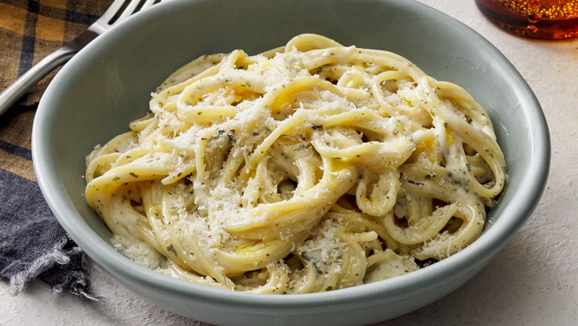

Pasta A collection of different pasta varieties Type Staple ingredient for many dishes Place of origin Italy Main ingredients Durum wheat flour Ingredients generally used Water, sometimes eggs Variations Rice flour pasta, legume pasta Cookbook: Pasta Media: Pasta Pasta is a type of food typically made from an unleavened dough of wheat flour mixed with water or eggs, and formed into sheets or other shapes, then cooked by boiling or baking. Pasta was originally only made with durum, although the definition has been expanded to include alternatives for a gluten-free diet, such as rice flour, or legumes such as beans or lentils. Pasta is believed to have developed independently in Italy and is a staple food of Italian cuisine, with evidence of Etruscans making pasta as early as 400 BCE in Italy. Pastas are divided into two broad categories: dried (Italian: pasta secca) and fresh (Italian: pasta fresca). Most dried pasta is produced commercially via an extrusion process, although it can be produced at home. Fresh pasta is traditionally produced by hand, sometimes with the aid of simple machines. Fresh pastas available in grocery stores are produced commercially by large-scale machines.
